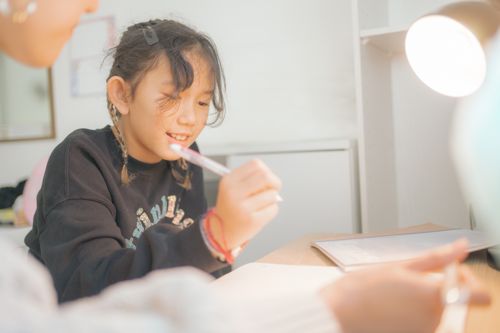
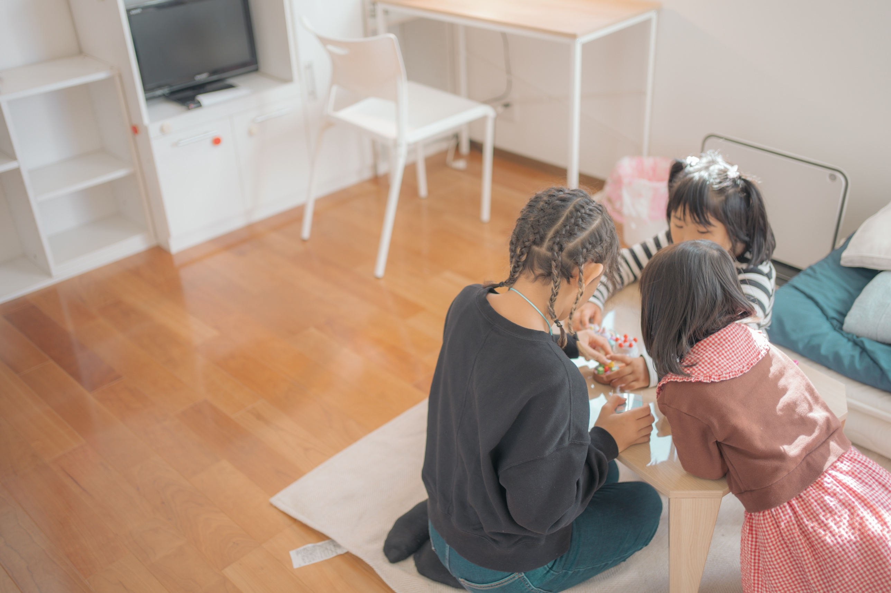
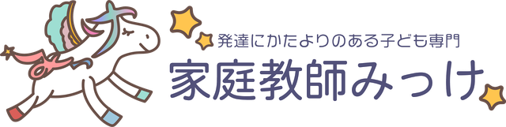
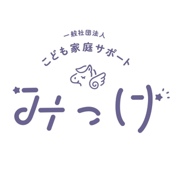

My Story
わたしのこと
橋田ゆうか
小学校の頃は、外を走り回ってポケモンして友達がいっぱいいる子でした。
中1のゴールデンウィーク前後から、突然学校に行けなくなりました。布団から出られなくなって、部屋にこもってDSをするだけの日が続いて。人と関われない、目を合わせて話せない。学校にも行けない、行きたくない、友達にも会えない。うまく言葉にならないモヤモヤがずっと積み重なって、本当にめちゃくちゃしんどかったです。
父も母も、まさかこんな私が不登校になるなんて、誰も想像していなかったと思います。
高校、大学と進学を機に、少しずつ自分のペースをつかんでいきました。大学在学中から家庭教師として発達の気になる子どもたちと関わるようになりました。授業を通して自分の過去と向き合えたのが、福祉学科・社会福祉士の道を選んでよかったと思う理由のひとつです。
だから今、あの時の私と同じ感情を抱えている子たちを一人でも救うためにこの仕事をしています。



